01. Servidor Web
Servidor web pode ser um programa de computador que tem como principal objetivo aceitar pedidos HTTP de navegadores e servi-los com respostas HTTP. Essas respostas normalmente são documentos HTML com objetivos embutidos (imagens etc.)
World Wide Web
Com o passar dos anos a aplicação World Wide Web sofreu um crescimento exponencial. Não são somente milhões de pessoas navegando a cada dia, mas, também por centenas de milhares de novos sites que são adicionados diariamente
Mas o que são servidores Web?
Um servidor Web é um computador conectado à internet, onde arquivos e outros recursos estão armazenados e disponíveis para a execução, e está em funcionamento permanente por 24 horas por dia.
A requisição de um arquivo ou recurso é efetuado através de um esquema de endereçamento uniforme conhecido como URL utilizando o seguinte formato:
http;//www.uninove.br80/aquivos/index.php
A URL é dividida em cinco partes:
- O protocolo utilizado
- O servidor acessando através do domain Name Server (DNS)
- A porta pela qual o servidor recebe as requisições (a porta defaulte é a porta 80 portanto ela não precisa ser informada)
- O diretório onde estão armazenados os arquivos solicitados
- O recurso desejado
Os servidores web foram projetados para atender a diversas necessidades dos clientes, dentre as quais podemos destacar:
- HTTP (O mais comum)
- Servidor POP3 e SMTP (Correio eletrônico)
- FTP (Gerenciamento de arquivos dentre outros)
No mercado existem diversos servidores web, mas só iremos mencionar apenas os dois líderes de mercado:
Instruções para instalar o servidor web WampServer
02. Tecnologias Client-Server
O que é linguagem client-side e server-side?
São termos de desenvolvimento da web que descrevem onde o código do aplicativo é executado.
Quando estamos programando para a internet, existem dois tipos de linguagens, as linguagens client-side e a linguagem server-side
- Lado do Cliente: No desenvolvimento da web, “lado do cliente” refere-se a tudo em um aplicativo web que é exibido ou ocorre no cliente (dispositivo do usuário final). As linguagens client-side são linguagens onde apenas o seu navegador vai entender.
- Lado do Servidor: O servidor fornece para o cliente uma saída: ele serve a página desejada ou arquivos. Ele também interpreta a entrada do cliente: o cliente envia informações (formulário) para o servidor e arquivos. As linguagens server-side são linguagens que o servidor entende.
São exemplos de linguagens client-side:
São exemplos de linguagens server-side:
- Banco de dados como SQL, MYDQL, Oracle...
- PHP
- ASP
- ASP.NET
03. Conceitos básicos da linguagem PHP
Integração com Bancos de dados
PHP se conecta a múltiplos bancos de dados (Oracle, SQLServer, PostgreSQL, MYsql) usando uma biblioteca PDO ou a função 'mysql_connect()'.
Essa integração é escencial para aplicações que precisam recuperar e armazenar dados
Geração de Imagens e documentos
PHP pode criar imagens, gráficos e documentos em formatos como DOC, PDF e XLS o que elimina a necessidade de ferramentas adicionas.
Facilidade de aprendizado
PHP é fácil de aprender devido a sua sintaxe similar a Java, Perl e C/C++
Execução no Servidor
O PHP processa o código no Servidor e envia o resultado em HTML para o cliente.
Isso permite o uso de tecnologias como Javascript, jQuery, Ajax e CSS no HTML, aumentando a complexidade das aplicações sem preocupações com o lado do servidor
04. Sintaxe, constantes, variáveis
Para iniciar a construção de um script em PHP iremos precisar de uma IDE
Sugestões
- Elipse
- NetBeans
- PHPEdit
- Zend Studio
Para que os códigos sejam processados, é necessário salvar o arquivo com a extensão .php
Usar o ponto e vírgula no final de cada comando. Também é importante lembrar que o PHP é case sensitive, ou seja, diferencia letras maiúsculas de letras minúsculas
Sintaxe PHP
Quando o Servidor PHP interpreta uma página, ele percorre o código-fonte do arquivo até encontrar a tag que indica o inicio do conteúdo PHP. O interpretador então executa todo o código que encontra, até chegar a tag de fechamento PHP.
Há quatro conjunto de tags que podem ser usadas para marcar bloco de códigos PHP. Duas delas estão habitadas por padrão, as outras de vem ser habilitadas manualmente.
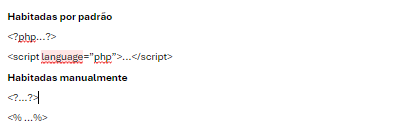
É importante ressaltar que para que estes dois últimos conjuntos de tags funcionem, precisamos habilitar no arquivo modificado os seguintes valores:
De
- short_open_tag= Off
- asp_tags= Off
Para
- short_open_tag = On
- asp_tag = On
Um pequeno exemplo da sintaxe PHP:
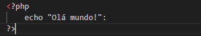
No PHP existem algumas maneiras básicas para exibir uma informação na tela
A instrução echo
A instrução echo é aquela que exibe qualquer informação na página, podendo conter texto, números ou variáveis.
O echo é uma instrução nativa do PHP, cujo sua sintaxe é simples:
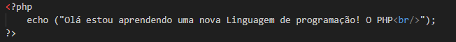
A instrução print
A função print() imprime dados no navegador de algumas formas diferentes:
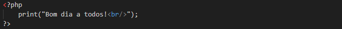
A instrução printf
A função printf() é uma função de saída de dados formatados, que permite que você formate a saída de dados.
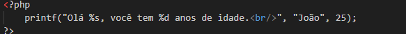
Quando usamos o comando echo ele não retorna nada, já o comando print sempre irá retornar o valor 1. Por esse motivo o comando echo vai ser ligeiramente mais rápido
Comentários
Existem três formas de se criar comentários no PHP?
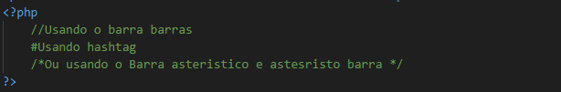
Concatenação em PHP
Concatenação é um termo usado em computação para unir "coisas diferentes, Ou seja, unir uma string e uma variável, ou uma variável cujo o conteúdo é um valor numérico com uma variável com o conteúdo do tipo string
Existem algumas formas de executar essa concatenação em PHP, vamos a elas:
Primeira forma:
Para concatenar podemos fazer uso do operador "."(Ponto)
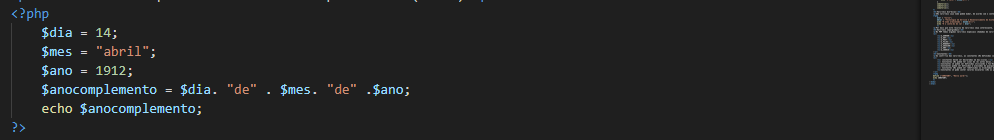
Segunda forma:
Aqui utilizaremos a atribuição de variáveis, ou seja, concatenaremos váriaveis quase que da mesma forma. a variável recebera a atribuição encontra se sempre do lado esquerdo, e estas recebem o valor que está na variável da direita. Utilizamos".="(ponto e sinal de igual)
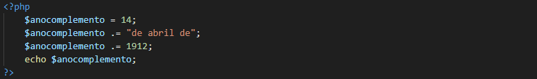
Variáveis em PHP
As variáveis em PHP são precedidas por um cifrão($) seguido pelo nome da variável e devem respeitar as regras abaixo
- O primeiro caractere deve ser uma letra ou um símbolo de uniderscore(_)
- Não pode conter espaços em nomes de variáveis compostos
- Crie sempre nomes de variáveis significativos, que permita transmitir uma ideia precisa sobre o conteúdo que a variável armazena
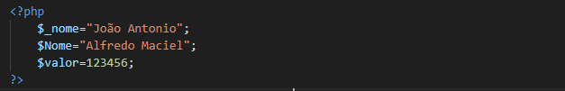
No PHP não temos a necessidade de especificar o tipo da variável na criação delas pois se trata de uma linguagem Fracamente Tipada
Variáveis locais
São criadas dentro de uma função ou em uma página que só pode ser referenciada por instruções dentro dessa mesma função ou página
Exemplo:
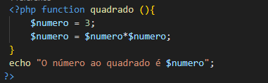
Variáveis globais
Podem ser acessadas em qualquer parte do programa ou página, dentro ou fora das funções
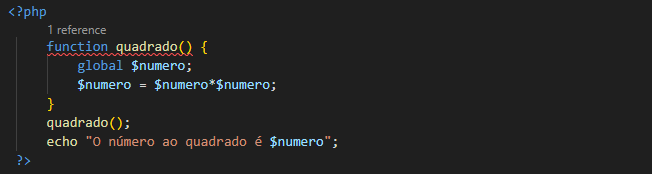
Variáveis estáticas
Este tipo de variáveis existe somente dentro do escopo de uma função, e não é destruída quando a função é finalizada. Podemos utilizá-la novamente ao chamar esta função, e ela ainda possuirá o valor que tinha anteriormente. As variáveis estáticas são visíveis apenas no programa ou na página em que foram criadas. Para criarmos uma variável estática usamos a palavra-chave static no momento da sua criação.
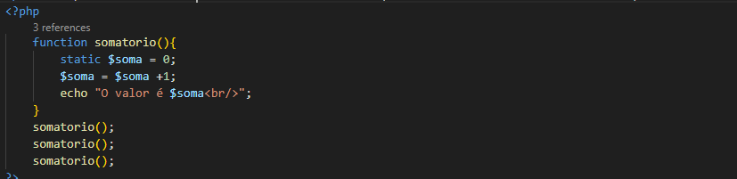
Variáveis dinâmicas
São variáveis cujo nome podem mudar, de acordo com o conteúdo de outra variável. Para declararmos uma variável dinâmica devemos iniciar seu nome com 2 cifrões($$), e o PHP irá interpretar que o conteúdo dessa variável é uma nova variável. Na realidade, o que criamos foi uma nova variável cujo nome será o conteúdo da variável criada anteriormente.
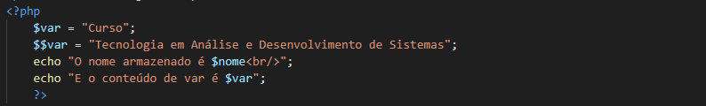
Por mais que este recurso de variáveis seja interessante, limite seu uso, pois além de deixar o código de difícil compreensão, pode causar falhas na segurança do seu script dependendo da forma em que for codificado.
Variáveis superglobais
No PHP temos algumas variáveis especiais chamadas de variáveis superglobais, também chamadas de variáveis pré-definidas, que nos permitem acessar informações disponíveis no ambiente do script. Essas variáveis não precisam ser declaradas e podem ser invocadas a qualquer momento no código.
- $_SERVER
- $_GET
- $_POST
- $_FILES
- $_REQUEST
- $_SESSION
- $_ENV
- $_COOKIE
Constantes
Ao contrário das variáveis, as constantes são definidas como valores imutáveis, ou seja, uma vez definida, seu conteúdo não muda. Constantes podem ser acessadas de qualquer lugar do script, ou seja, são globais. Assim como as variáveis, as declarações de constantes também possuem algumas regras.
- constantes devem ser declaradas em maiúsculas.
- Constantes não podem ter sinal de ($) antes delas.
- Constantes só podem ser definidas utilizando a função define()
- Constantes podem ser definidas e acessadas de qualquer lugar, sem que as regras do escopo de variáveis sejam aplicadas.
- Constantes não podem ser redefinidas ou eliminadas depois que são a sessão criadas.
- Constantes só pode conter valores escalares (são os que contêm Integer, float, string ou boolean)
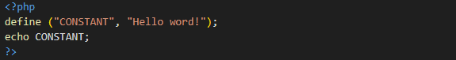
05. Servidor Web
Arrays
Arrays são estruturas de dados que armazenam numa coleção de elementos identificados por um índice ou chave. Também conhecido como variáveis indexadas, vetores (arrays unidimensionais) ou matrizes (arrays multidimensionais), eles permitem armazenar inúmeros valores na mesma porção de memória, ao contrário de uma variável comum que armazena apenas o valor.
Criando arrays em PHP
Uma das maneiras mais comuns para criar um array em PHP é utilizando o construtor array(),
Veja o exemplo:
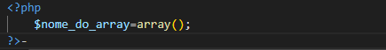
No exemplo acima, a variável $nome_do_array já é um array! Simples assim.
Também podemos iniciar nossos nosso array contendo alguns valores. Por exemplo,vamos iniciar nosso array com 4 valores.
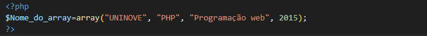
Você também pode criar um array colocando colchetes em frente ao nome da variável que será o arry em si.
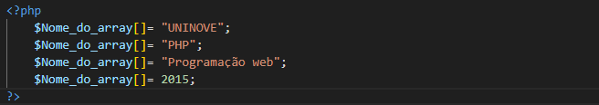
Todos os trechos de código acima geram índices ou chaves automaticamente. Nesse caso, nesses índices são números começando pelo número zero sendo incremento a cada novo item.
Exibindo o valor de uma posição do array
Numa variável array podemos ter n valores armazenados. Ou seja, cada variável fica numa posição específica nesta porção de memória.
Em PHP, uma das formas é de acessar tais valores é utilizando o índice (index) do array Que sempre se inicia em zero.
Ou seja, todo o índice é definido pela posição -1. Portanto, se quisermos acessar o terceiro elemento de um array devemos usar o índice da posição 2, porque 3 − 1 é igual a 2.
Os índices são indicados por colchetes [] que vem logo após o nome da variável. Portanto, se quisermos modificar ou acessar o conteúdo de uma variável, faríamos:
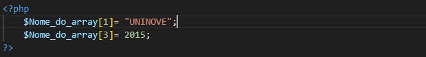
Neste caso, sabemos quais elementos queremos acessar, agora e se não soubermos quantos elementos nossos array possui? É extremamente fácil ver todos os índices e seus respectivos valores em PHP, basta utilizar o comando print_r (exibe os valores do vetor ou da matriz apresentando-os em um formato que mostra chaves e elementos) Veja o exemplo:
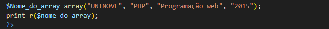
Arrays associativos
Uma característica interessantíssima dos Arrais em PHP é a capacidade de associações. Quando nos referimos a associação, queremos dizer que ao invés de índices numéricos inteiros, gerados de forma automática (0,1,2 ...), podemos gerar um índice do tipo do string com o nome que desejamos. Dessa forma fica mais fácil fica muitomais simples e intuitivo obter um valor de uma array, pois nomes fazem mais sentido do que números.
Veja o exemplo com índices definidos:
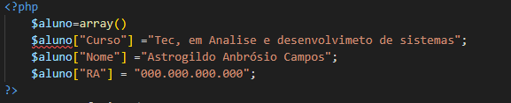
Ou se preferir:
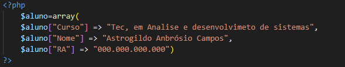
Para exibir os valores dos array associativo, seguimos o mesmo padrão:
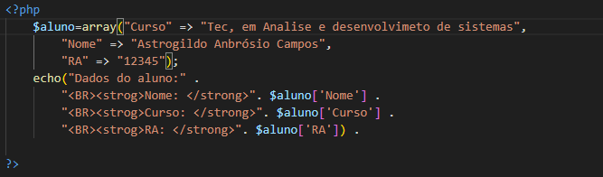
Arrays multidimensionais (Matrizes)
O PHP nos permite trabalharmos com (Matrizes) que são arrays dentro outros arrays, ou seja, em cada posição de um array existe outro array.
Um array multidimensional pode ser bidimensional (2D), tile tridimensional (3D) e assim por diante.
Quando utilizamos a raiz multidimensionais (matrizes) existem mais índices numa mesma variável.
Exemplo:
- Arrays comum: $vetor[]
- Arrays bidimensional: $vetor[][]
- Arrays tridimensional: $vetor[][][]
Os índices de uma de uma matriz segue a mesma característica dos índices visto até agora, podendo ser tanto numérico quanto strings (associativo).
Tomemos como base, o exemplo anterior, porém, vamos criar uma matriz para cadastrarmos mais uma de uma pessoa.
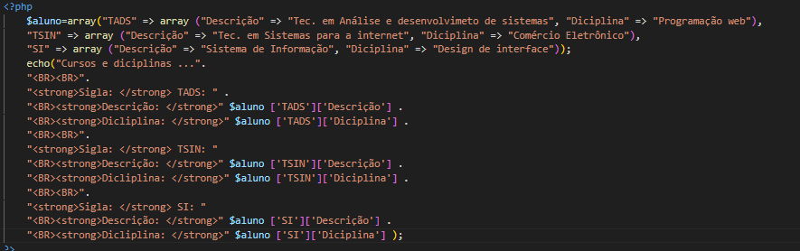
Objetos em PHP
Orientação a objetos:
Podemos defini-la como um modelo de programação de sistemas baseado na composição e interação de diversas unidades de software
Na orientação a objetos, implementam-se classes que definem os objetos presentes no sistema. Cada classe determina o comportamento e estados possíveis de seus objetos, assim como o relacionamento com outros objetos
Alguns termos serão constantes na orientação a objetos.
- Classes
- Subclasses
- Objeto ou instância
- Atributos
- Métodos
- Mensagem
- Herança ou generelização
- Associação
- Encapsulamento
- Abstração
- Polimorfismo
- Interface
- Pacotes
Criando uma classe e acessando os atributos dessa classe
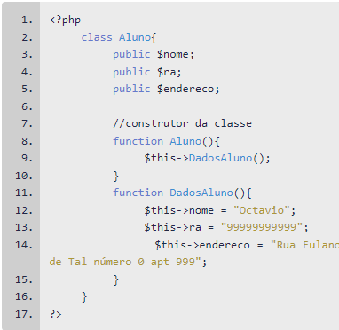
Operadores em PHP